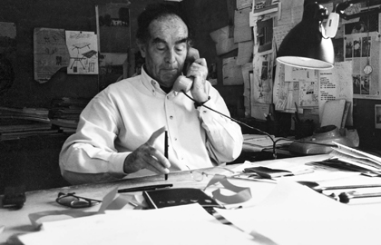

Vico Magistretti - Major Awards

1948 Gran Premio - VIII Triennale di Milano
1951 Medaglia d’Oro - IX Triennale di Milano
1954 Gran Premio - X Triennale di Milano
1967 Compasso d’Oro - Milano - lampada Eclisse per Artemide
1967 Accademico di San Luca
1970 Medaglia d’Oro - Wiener Mobelsalons International - Vienna - tavolo Stadio
1970 Medaglia d’Oro Wiener Mobelsalons International - Vienna - sedia Selene
1970 Medaglia d’argento Wiener Mobelsalons International - Vienna - lampada Eclisse
1970 Medaglia d’argento Wiener Mobelsalons International - Vienna - lampada Telegono
1971 Biscione d’Oro - Ente Provinciale per il turismo di Milano
1971 Targa d’Argento associazione Italiana Prefabbricazioni per edificio MBM a Milano
1979 Compasso d’oro - Milano - lampada Atollo
1979 Compasso d’Oro - Milano - poltrona divano Maralunga
1982 Sedia d’Oro Mobelsalons Koln - Colonia - poltrona divano Sindbad
1982 ASID Product Design Award - NY - poltrona divano Sindbad
1982 Commendation of Resources Council INC. - NY - poltrona divano Sindbad
1983 Honorary Fellow Royal College of Art - Londra
1986 Honorary Fellows Honoris cause R.I.A.S. in Scotland - Aberdeen
1986 Medaglia d’Oro della Chartered Society of Industrial Artists & Designers - Londra
1987 Forum design 87 - Milano - appendiabiti Spiros
1987 Forum design 87 - Milano - poltrona G12
1987 Lapiz de Plata - Bienal de Diseno BA/87 - Buenos Aires
1988 Ambrogino d’Oro - Milano
1989 Medaglia d’Oro di cittadinanza benemerita del Comune di Milano
1990 Commitment to excellence Design 100 Metropol - Italian Home - NY
1990 Honorary Professor Royal College of Art - Londra
1992 Honorary Royal Designer for Industry by the Royal Society of Arts - Londra
1994 Top Ten - Upholstered Furniture Design Award Europe 1994 - Colonia - poltrona Louisiana
1995 Top Ten - Upholstered Furniture Design Award Europe 1995 - Colonia - divano Tuareg
1995 Red Dot - Highest Design Quality - Design Zentrum Nordrhein Westfalen - Essen - sedia Vico
1995 Compasso d’Oro alla carriera
1995 MD Design Auswahl 95 - Stuttgart - sedia Vico
1996 Senior Fellow of the Royal College of art - Londra
1997 Medaglia d’Oro “Apostolo del Design” - Milano
1997 Red Dot - Highest Design Quality - Design Zentrum Nordrhein Westfalen - Essen - sedia VicoDuo
1997 Design Preis Schweiz 97 - Langenthal - Svizzera (sedia e tavolo VicoDuo
1997 Internationaler Design Preis des landes Baden-Wurttemberg 97 - Design Center Stuttgart - sedia e tavolo VicoDuo
1997 G-Mark design 97 - Giappone - sedia e tavolo VicoDuo
1998 Industrial Design Excellence Award Gold - Idea Chair 98 - Usa - sedia VicoDuo
1998 Tf Product Design Award 98 - Germania - sedia e tavolo VicoSolo
1999 G-Mark Design 99 - Giappone - sedia VicoSolo
1999 Red Dot - Highest Design Quality - Design Zentrum Nordrhein Westfalen - Essen - sedia VicoSolo
2002 Laurea ad Honorem in Disegno Industriale presso il Politecnico di Milano
2003 Membro del Comitato Scientifico Fondazione Politecnico di Milano